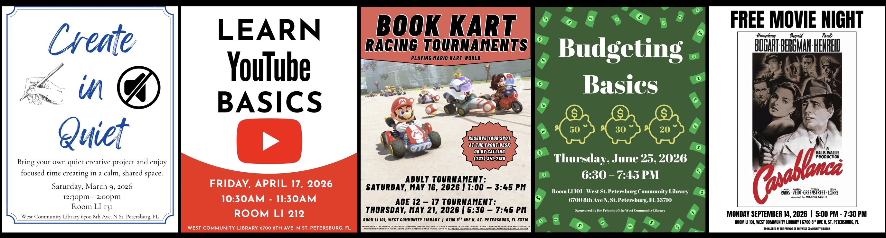
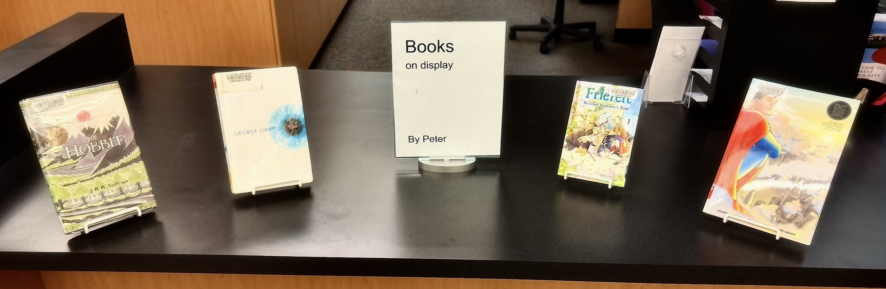
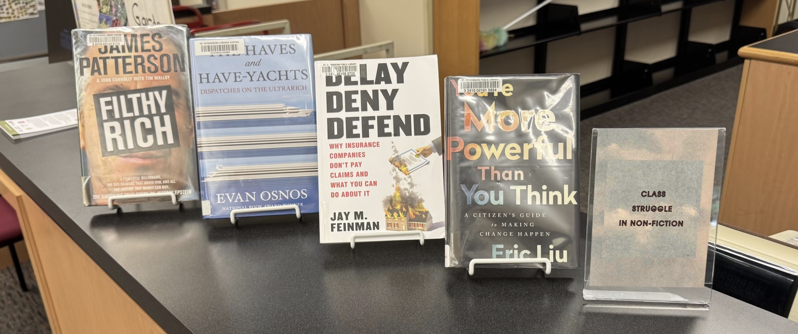
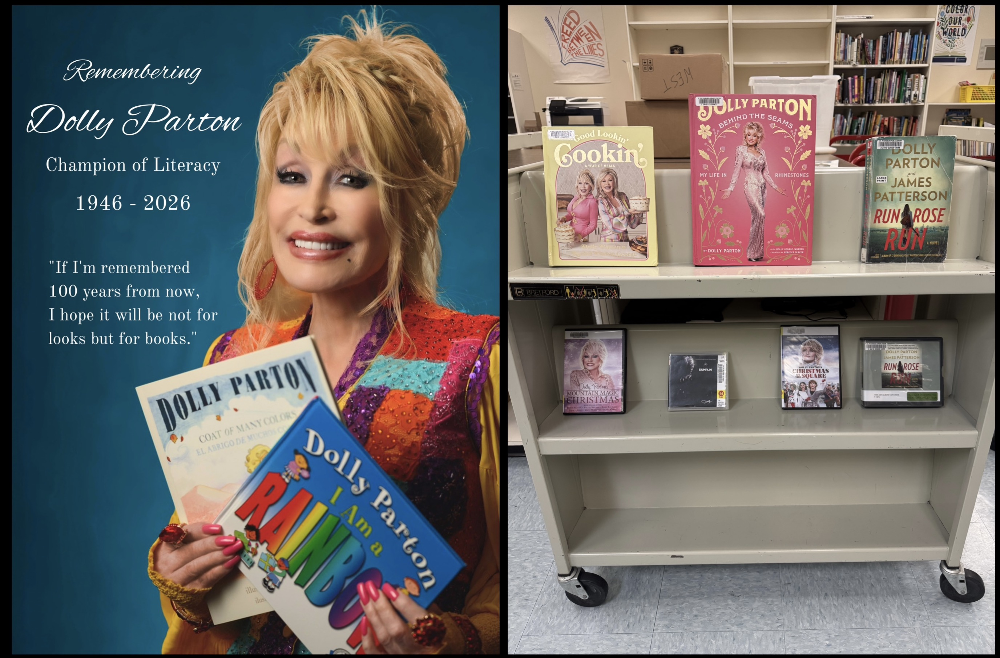
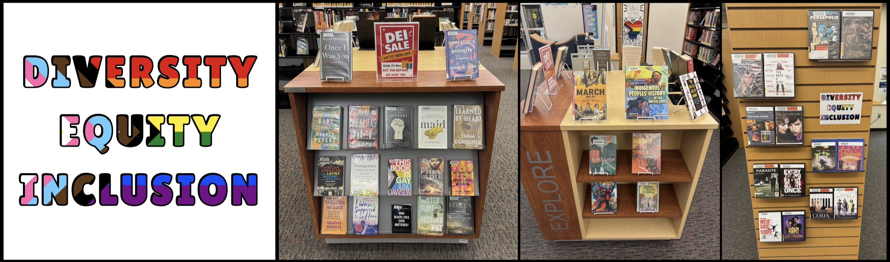
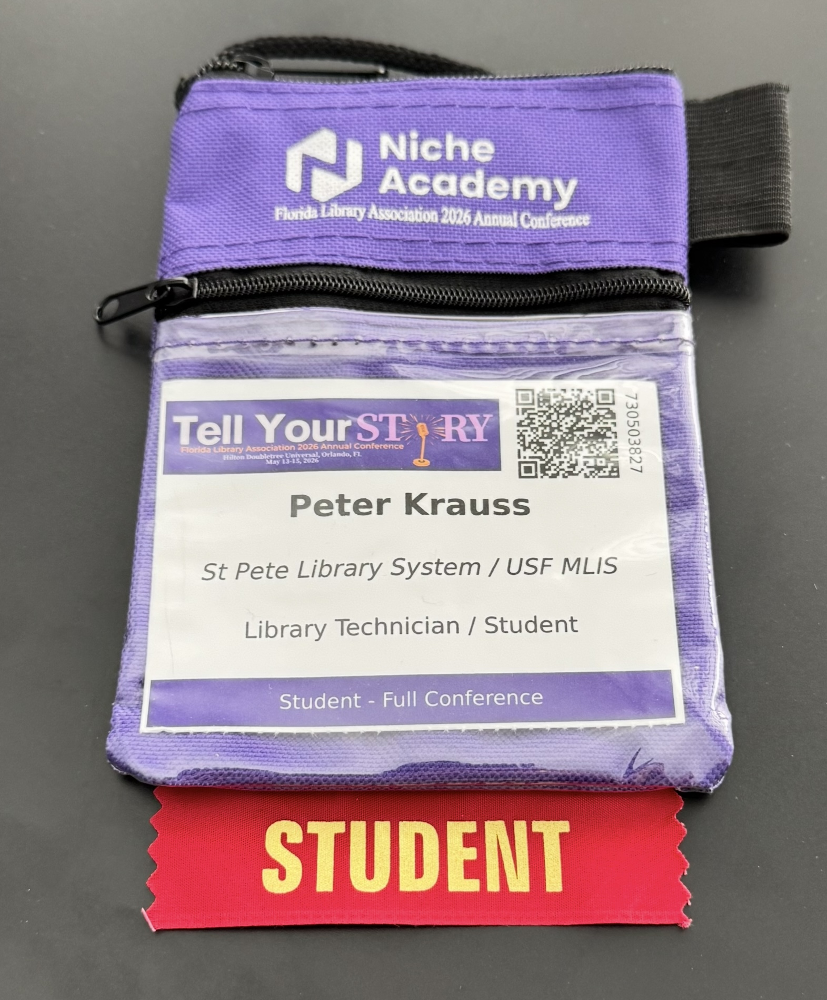
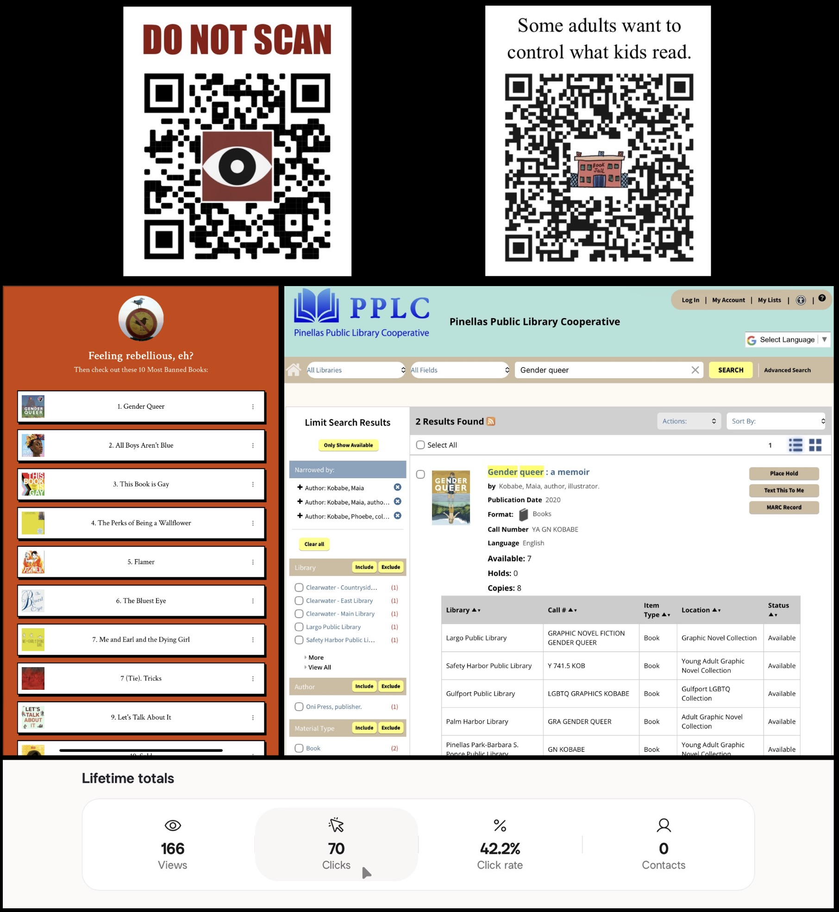

Co-Curriculars
Beyond the Classroom
Library Programming
My creation and facilitation of library programs shows my ability to develop (from ideation to completion) engaging, inclusive learning opportunities that support creativity, digital literacy, recreation, life skills, and community needs.
Create in Quiet - A program I made to provide patrons with a collaborative and welcoming space for art and personal projects.
YouTube Basics - A program where I taught an introductory digital literacy class focused on navigating and using YouTube effectively and safely.
Book Kart Tournament - A program where I organized and facilitated a Mario Kart gaming tournament to encourage community engagement.
Budgeting Basics - A program where I led a financial literacy workshop introducing practical budgeting strategies and money management skills for patrons.
Free Movie Night - A program where I hosted a free movie night playing Casablanca, encouraging community engagement and entertainment.

Themed and Reader Advisory Displays
I developed a personal staff recommendation display to promote reader advisory services and encourage patron engagement with the collection.

Other small displays include a “Class Struggle in Non-Fiction” collection, and a memorial cart display honoring Dolly Parton following her passing.
 
DEI Displays
With the passage of Florida SB 1134, any materials or programming deemed to promote diversity, equity, and inclusion (DEI), starting January 1, 2027 are banned. In response, I curated a series of DEI-focused displays beginning in September to give patrons access to these perspectives before the ban took effect. Below are two displays I developed. I also created a trifold brochure that defined DEI, outlined the range of viewpoints surrounding it, and explained its impact on our library.

Florida Library Association Conference 2026

Banned Book QR Codes
Furthermore, I designed a QR code linked to a Linktree of the top challenged and banned books, with each title connected directly to the library catalog for checkout access. Displayed throughout the library, this initiative increased patron engagement and demonstrates my skills in digital outreach, accessibility, and promoting intellectual freedom through user-centered library services.
